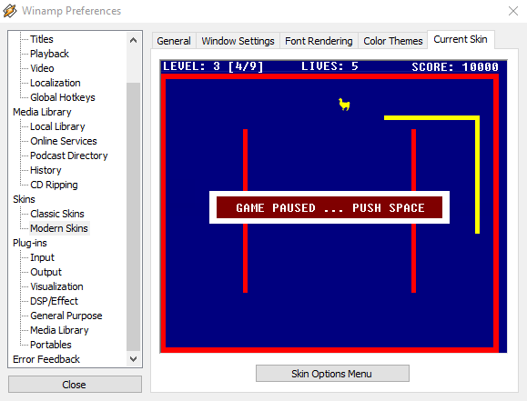

During my last year at high school I was hired1 by AOL (the former owner of Winamp) to revamp the whole Winamp user interface and combine separate windows (player, equalizer, playlist, …) into a single tabbed user interface. At that time Winamp was one of the most popular media players for Windows—with more that 80+ million unique users per month. And yes, you once had audio files on your physical hard drive
On October the 10th 2007 we released the new user interface titled Bento with Winamp 5.5 “10th anniversary edition”.
Feature Highlights
- One of the first single-window user-interfaces for Winamp at this time
- A web browser including bookmark support and music scraping (listen & download embedded music)
- Two versions of the interface for normal and high-resolution monitors using a single code base
Focus of my Work
- Transforming the awesome Photoshop mock-ups of Taber Buhl into a pixel-perfect user interface
- Suggesting modifications to the design and provide ideas for new features
- Writing interaction logic in Winamp’s own UI scripting language
- Extending the C++ skinning engine with the core development team
After the initial release in October 2007, I have provided several updates to the interface and adjusted it to new requirements.
In retrospective it was a nice experience to work remotely on such a popular software product at a time where tools like Skype or Google Hangouts were not that common or just unusable via a 56k dial-up modem.
Moreover, I can pretend that I was part of the digital music revolution 
…Oh, and according to this list I have also written the top Winamp easter egg “Llama Snake” 

-
Due to the lack of a developer for the so-called skins (Justin Frankel was long gone) I was asked to fill this gap as I was an active member in the Winamp skinning community at this time. ↩